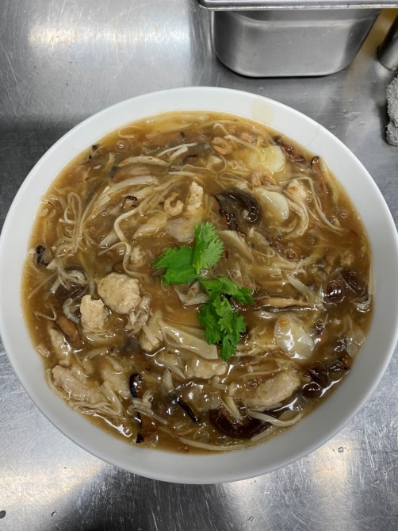

紅燒蝦仁羹
蝦仁6隻、金針菇、杏鮑菇、鮑魚菇、小白菜切絲。烏蔘切條、後腿肉切條。馬蹄切片筍絲、乾香菇、蝦米炸過 一顆蛋打勻3.5大匙太白粉：7匙水
醃製後腿肉：ㄧ匙醬油、米酒、糖，胡椒粉、味精適量拌勻少許蛋液適量太白粉
醃製蝦仁：胡椒鹽少許
1.鍋子倒入八分滿的水放入拌好的漿（先放蝦仁在放肉條）開小火浮上來即可撈起沖水
2.鍋子放入水滾後倒入三種菇類撈起後放入小白菜，撈起後放入筍絲倒入白醋撈起沖水（放一起）撈起後川燙海參
3.鍋子放入高湯700清水700開火煮滾，放入一半扁魚，乾香菇、蝦米、三種菇、小白菜、筍絲
慢慢煮滾放入海蔘、馬蹄、漿撈關小火勾芡最後再放入剩下的扁魚跟蒜頭酥兩大匙，胡椒、味精、鰹魚份1/2匙，烏醋、五印醋37.5g ，鹽巴10g，冰糖45g，煮滾
